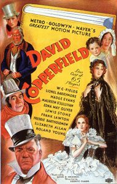

David Copperfield

Starring: Maureen O'Sullivan, Lionel Barrymore, Basil Rathbone
Director: George Cukor
Writer: Hugh Walpole, Howard Estabrook, Lenore J. Coffee
Producer: David O. Selznick
David Copperfield is a 1935 American film released by Metro-Goldwyn-Mayer based upon Charles Dickens' 1850 novel The Personal History, Adventures, Experience, & Observation of David Copperfield the Younger (though a number of characters and incidents from the novel were omitted).
Trivia
- Selected for the National Board of Review: Top Ten Films.
- Also nominated for: Academy Award for Best Picture; Academy Award for Best Film Editing.
- Based on David Copperfield (1849–1850 novel by Charles Dickens).
- David O. Selznick dearly wanted to film David Copperfield, as his Russian father, Lewis J. Selznick, had learned English through it, and read it to his sons every night.
- After failing to dissuade Selznick from the project, Louis B. Mayer, his father-in-law and employer, agreed that MGM would underwrite the production provided his contract child star Jackie Cooper was cast in the role of the young David.
- Selznick fought to remain true to the novel's origins and, after an extensive talent search in Canada and Great Britain by Selznick and George Cukor, the role went to the British Freddie Bartholomew.
Filming Locations
- Malibu
- Cedric Gibbons designed a recreation of 19th-century London on the MGM backlot.
- The scenes set outside Aunt Betsey's house atop the white cliffs of Dover were filmed at Malibu.
Previous Showings
4 Runs • 1 Festival
Original Billings: 1 run (February 17, 1935)
Original Run: February 17, 1935 (Sunday - Tuesday)
All runs on record (4):
- February 17, 1935 (Sunday - Tuesday)Freddie Bartholomew, W. C. Fields
- March 21 - 22, 1991w/ Little Women
- November 7 - 9, 1992w/ The Adventures of Tom Sawyer
- February 26 - March 2, 1999Directed by George Cukorw/ The Royal Family of Broadway